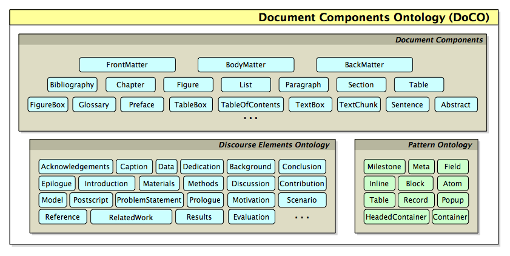

The Document Components Ontology (DoCO) is an OWL 2 DL ontology that provides a general-purpose structured vocabulary of document elements. DoCO has been designed as a general unifying ontological framework for describing different aspects related to the content of scientific and other scholarly texts. Its primary goal has been to improve the interoperability and shareability of academic documents (and related services) when multiple formats are actually used for their storage.
The creation of DoCO was undertaken by studying different corpora of documents (mainly scientific literature and web documents on different topics) and publishers' guidelines, from two perspectives – the structural and the rhetorical. In addition, some informal interviews have been done with researchers in different fields and with academic publishers, in order to gather as much information as possible about document components and their use.
DoCO imports the Pattern Ontology that describes structural patterns (introduced in the paper entitled Dealing with structural patterns of XML documents), and the Discourse Element Ontology (DEO), which was developed with DoCO and describes rhetorical components.
Additionally, it also defines hybrid classes describing elements that are both structural and rhetorical in nature, such as paragraph (doco:Paragraph), section (doco:Section) or list (doco:List). DoCO is also aligned with the SALT Rhetorical Ontology and the Ontology of Rhetorical Blocks (ORB).
A concise summary of the main DoCO classes and its imported ontologies is shown in the following figure.

In the following subsections, we introduce some examples to showcase how to use DoCO.
The prefixes that are used in all the examples provided below are defined as follows:
@prefix : <http://www.sparontologies.net/example/> .
@prefix doco: <http://purl.org/spar/doco/> .
@prefix deo: <http://purl.org/spar/deo/> .
@prefix po: <http://www.essepuntato.it/2008/12/pattern#> .
@prefix dcterms: <http://purl.org/dc/terms/> .
@prefix fabio: <http://purl.org/spar/fabio/> .
@prefix co: <http://purl.org/co/> .
@prefix c4o: <http://purl.org/spar/c4o> .
DoCO can be used for describing several parts of a document such as a journal article (defined through the FaBiO class fabio:JournalArticle) connecting then by means of the object property po:contains.
It can be also used in combination with C4O and the Collections Ontology (CO) for describing its textual content and the particular order in which the various components appear.
In particular, the actual textual content of each component can be specified through the property c4o:hasContent, while the order can be described by using the entities related with the class co:List.
:paper a fabio:JournalArticle ;
po:contains
:front-matter ,
:body-matter ,
:back-matter ;
co:firstItem [
co:itemContent :front-matter ;
co:nextItem [
co:itemContent :body-matter ;
co:nextItem [
co:itemContent :back-matter ] ] ] .
:body-matter a doco:BodyMatter ;
po:contains
:section-introduction ,
:section-related-work ,
:section-document-components ,
:section-adoption ,
:section-conclusions ;
co:firstItem [
co:itemContent :section-introduction ;
co:nextItem [
co:itemContent :section-related-work ;
co:nextItem [
co:itemContent :section-document-components ;
co:nextItem [
co:itemContent :section-adoption ;
co:nextItem [
co:itemContent :section-conclusions ] ] ] ] ] .
:section-introduction a doco:Section , deo:Introduction ;
po:containsAsHeader :section-introduction-title ;
po:contains
:paragraph-1 ,
:paragraph-2 ,
:paragraph-3 ,
:paragraph-4 ;
co:firstItem [
co:itemContent :section-introduction-title ;
co:nextItem [
co:itemContent :paragraph-1 ;
co:nextItem [
co:itemContent :paragraph-2 ;
co:nextItem [
co:itemContent :paragraph-3 ;
co:nextItem [
co:itemContent :paragraph-4 ] ] ] ] ] .
:section-introduction-title a doco:SectionTitle ;
c4o:hasContent 'Introduction' .
:paragraph-1 a doco:Paragraph ;
po:contains
:sentence-1 ,
:sentence-2 ,
:sentence-3 ,
:sentence-4 ,
:sentence-5 ,
:sentence-6 ,
:sentence-7 ;
co:firstItem [
co:itemContent :sentence-1 ;
co:nextItem [
co:itemContent :sentence-2 ;
co:nextItem [
co:itemContent :sentence-3 ;
co:nextItem [
co:itemContent :sentence-4 ;
co:nextItem [
co:itemContent :sentence-5 ;
co:nextItem [
co:itemContent :sentence-6 ] ] ] ] ] ] .
:sentence-1 a doco:Sentence ;
c4o:hasContent 'One of the most important criteria for the
evaluation of a scientific contribution is the coherent
organisation of the textual narrative that describes it,
most often published as a scientific article or book.' .
Among the various parts of a paper, describing references to other objects of the paper, such as bibliographic references, can be of some interest for keeping track, for instance, the number of times a particular publication is actually cited within a paper. DoCO allows one to describe all these parts and to link them together.
:sentence a doco:Sentence ;
c4o:hasContent 'For instance, a recent report by Beck [3]
explains the requirements for an XML vocabulary of
scientific journals to be acceptable for inclusion
in PubMed Central.' ;
po:contains :reference-to-3 .
:reference-to-3 a deo:Reference ;
c4o:hasContent '[3]' ;
dcterms:references :bibliographic-reference-3 .
:bibliographic-reference-3 a deo:BibliographicReference ;
c4o:hasContent '[3] Beck, J. (2010). Report from the Field:
PubMed Central, an XML-based Archive of Life Sciences
Journal Articles. In Proceedings of the International
Symposium on XML for the Long Haul: Issues in the Long-term
Preservation of XML.
OA at http://dx.doi.org/10.4242/BalisageVol6.Beck01.' .
DoCO can be used for answering several questions related to documents and their structural and rethorical elements.
In the following subsections, some of them are introduced together with their respective SPARQL queries.
The prefixes that are used in all the SPARQL queries provided below are defined as follows:
PREFIX : <http://www.sparontologies.net/example/>
PREFIX doco: <http://purl.org/spar/doco/>
PREFIX deo: <http://purl.org/spar/deo/>
PREFIX po: <http://www.essepuntato.it/2008/12/pattern#>
PREFIX dcterms: <http://purl.org/dc/terms/>
PREFIX fabio: <http://purl.org/spar/fabio/>
PREFIX co: <http://purl.org/co/>
PREFIX c4o: <http://purl.org/spar/c4o>
What are all the sections contained within the article's body matter, and in which sequential order do they appear?
SELECT ?section ?sectionType
WHERE {
?bodyMatter a doco:BodyMatter ;
co:firstItem ?item .
?item co:itemContent ?section .
?item co:nextItem* ?next .
?next co:itemContent ?section .
OPTIONAL { ?section a ?sectionType . }
}
What is the literal textual content of the first sentence belonging to the first paragraph of the introduction section?
SELECT ?sentenceText
WHERE {
?introSection a deo:Introduction .
?introSection co:firstItem ?headerItem .
?headerItem co:nextItem ?firstParagraphItem .
?firstParagraphItem co:itemContent ?firstParagraph .
?firstParagraph a doco:Paragraph .
?firstParagraph co:firstItem ?firstSentenceItem .
?firstSentenceItem co:itemContent ?firstSentence .
?firstSentence c4o:hasContent ?sentenceText .
}
Which in-text references are contained within a specific sentence, and what are their literal textual markers?
SELECT ?reference ?textMarker
WHERE {
?sentence a doco:Sentence ;
po:contains ?reference .
?reference c4o:hasContent ?textMarker .
}
What is the full bibliographic text of the reference cited by a specific inline citation marker?
SELECT ?inlineMarker ?fullBibliographicText
WHERE {
?reference a deo:Reference ;
c4o:hasContent ?inlineMarker ;
dcterms:references ?bibReference .
?bibReference a deo:BibliographicReference ;
c4o:hasContent ?fullBibliographicText .
}